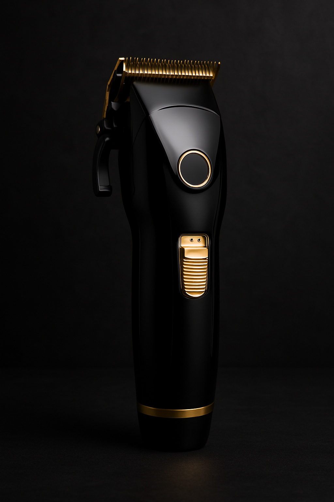
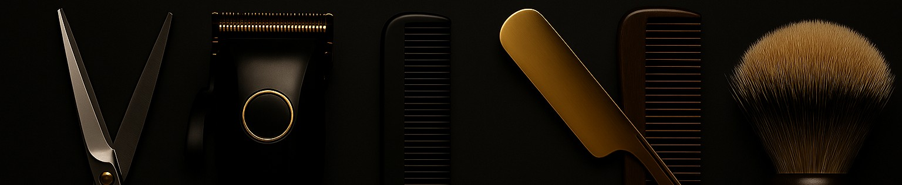
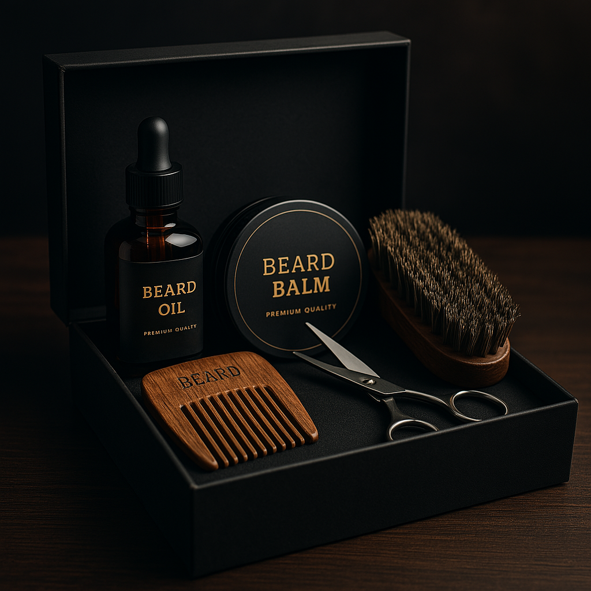
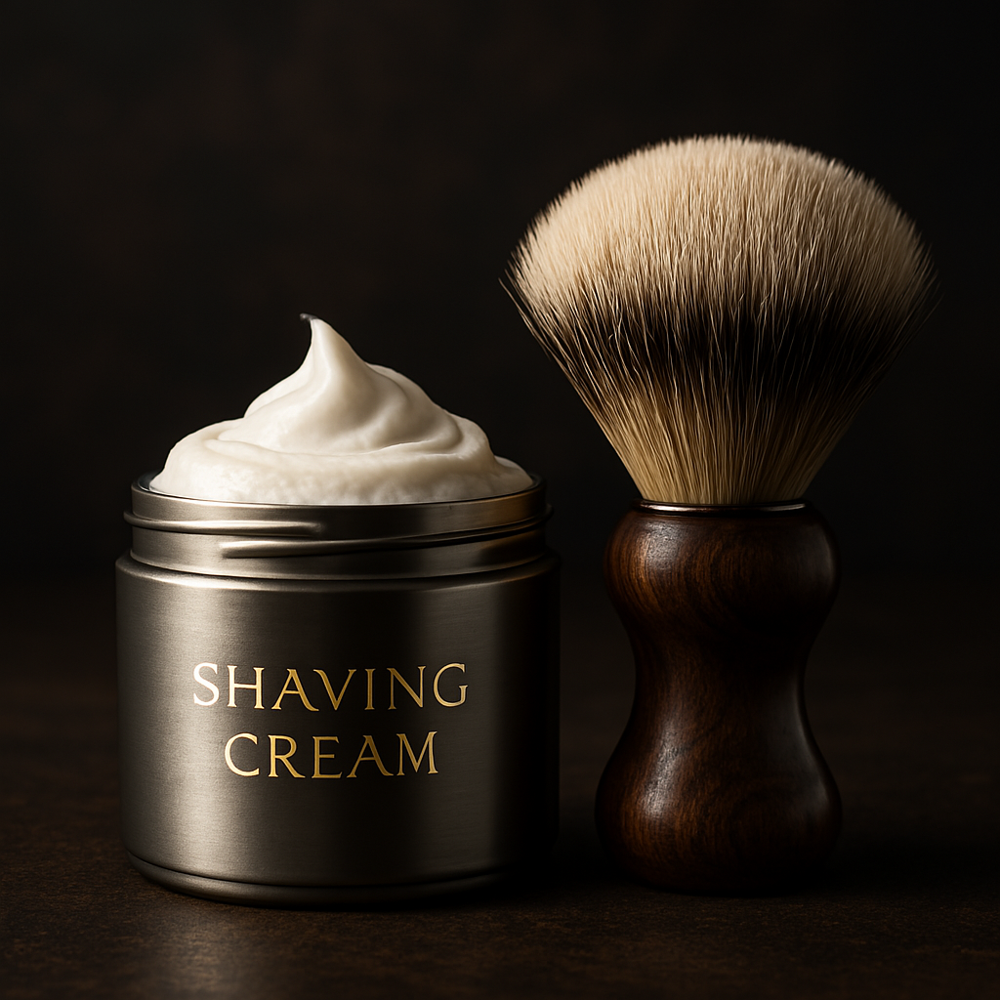
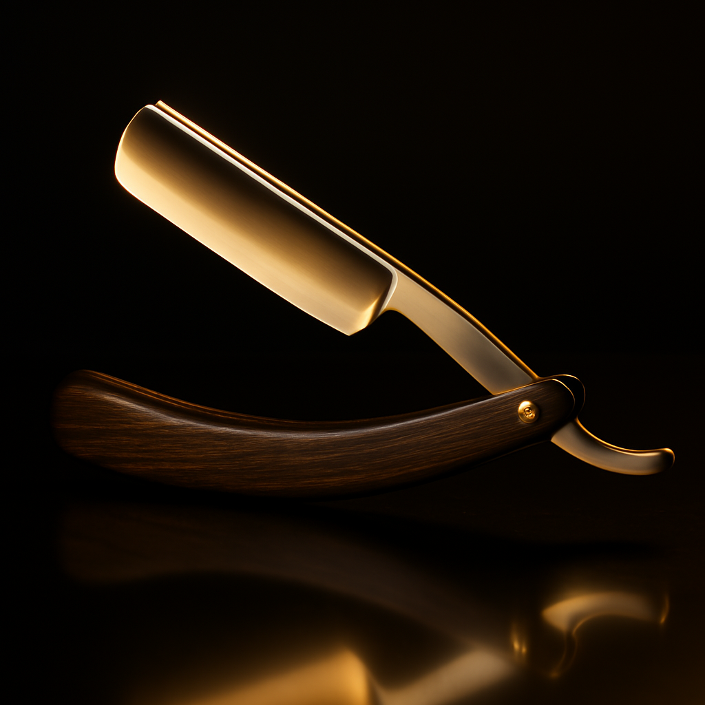
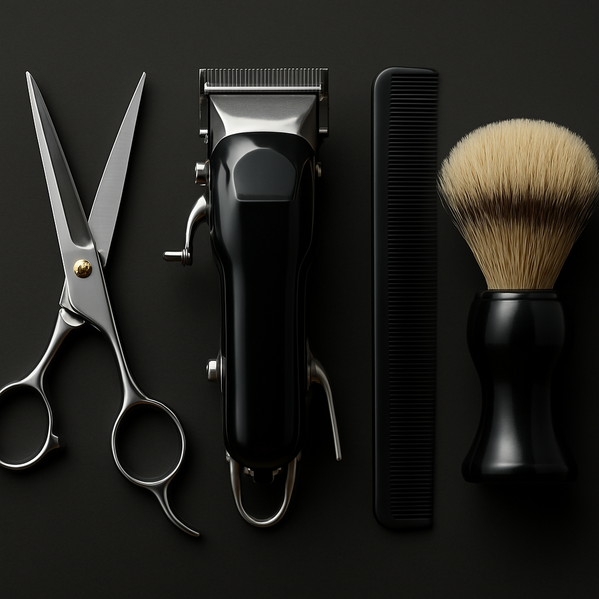

Máquinas de Cortar
Máquinas e trimmers para cabelo, barba e acabamentos, com opções para uso profissional e para casa.
Ver produtos
Reunimos as categorias mais úteis para barbeiros e para quem trata da barba em casa. Escolhe uma categoria e vai direto a máquinas, kits, cremes, navalhas e acessórios.
Escolhe a área que te interessa e entra em páginas dedicadas com produtos para uso profissional, manutenção da barba e cuidados do dia a dia.

Máquinas e trimmers para cabelo, barba e acabamentos, com opções para uso profissional e para casa.
Ver produtos
Conjuntos práticos para oferecer ou montar uma rotina completa com óleo, balm, shampoo e acessórios.
Ver produtos
Espumas, sabonetes e cremes para um barbear mais confortável, com melhor deslizamento e menos irritação.
Ver produtos
Navalhas clássicas, shavettes e lâminas para quem valoriza precisão e um acabamento limpo.
Ver produtos
Pentes, escovas e ferramentas de manutenção diária para barba bem tratada e cabelo alinhado.
Ver produtos
Capas, pulverizadores, consumíveis e extras úteis para o balcão ou para o posto de trabalho.
Ver produtos